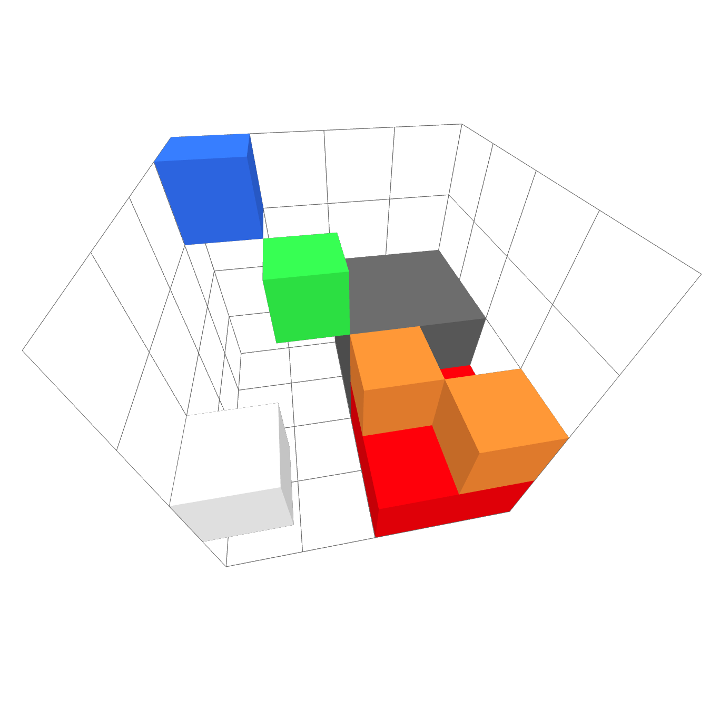

Full Example
To better illustrate the functionality of the FLVC codec, we will walk through a full example of encoding a VL32 file using FLVC manually.
Our test model will be the following 4x4x4 partially filled cube. The blue voxel is the uppermost point and, the bottom-right, red voxel is the lowermost point at .
The octant containing gray voxels is completely filled, meaning it consists of 2x2x2 voxels.

Figure 1: The test model visualized as a graph
VL32 Encoding
See VL32 Specification. This following block shows a hex-printout of the VL32 file with added comments. Each row is one voxel. Each voxel consist of three big-endian two-complement coordinates followed by ARGB color bytes.
// 4 red bottom voxels
00000000 00000000 00000000 ffff000a
00000001 00000000 00000000 ffff000a
00000000 00000000 00000001 ffff000a
00000001 00000000 00000001 ffff000a
// 2 orange voxels
00000000 00000001 00000000 ffff8b33
00000001 00000001 00000001 ffff8b33
// 8 gray voxels
00000000 00000000 00000002 ff646464
00000001 00000000 00000002 ff646464
00000000 00000001 00000002 ff646464
00000001 00000001 00000002 ff646464
00000000 00000000 00000003 ff646464
00000001 00000000 00000003 ff646464
00000000 00000001 00000003 ff646464
00000001 00000001 00000003 ff646464
// 1 white voxel
00000003 00000001 00000000 ffffffff
// 1 green voxel
00000002 00000002 00000002 ff33ff4c
// 1 blue voxel
00000003 00000003 00000003 ff3373ff
Conversion to FLVC Step by Step
Header
We start out by encoding the constant parts of the header:
ff1133cc666c7663 // magic bytes
00 01 // version 0.1
feffffff feffffff feffffff // volume_offset = (-2, -2, -2)
// keep in mind these are little-endian integers
04000000 04000000 04000000 // volume_size = (4, 4, 4)
00 // empty = false
"(def)" // five ASCII padding bytes
Attribute Definitions
Then, we must encode the attribute definitions.
There must always be a definition for the position attribute.
While the type and modifiers for this attribute have no influence on the rest of
the stored data, they are necessary for the FLVC API to know the layout of
position triples when encoding and decoding a data stream.
0200 // definitions_size = 2
08 // identifier_length = 8
"position" // identifier
14 // type = 0x14 = INT32
03 // cardinality = 3
0000 // no modifiers
05 // identifier_length = 5
"color" // identifier
21 // type = 0x21 = UINT8
04 // cardinality = 4
00 // no modifiers
"|" // end of header, start of data
SVO Processing
We must first encode our voxel data as an SVO. We won't go into detail how to do this in this chapter. The end result looks as follows:
Figure 2: The test model visualized as a graph
In this figure, we see the root node connected to four octants. Each octant has up to eight voxels. The topmost bit in each child mask represents the lowermost octant of a node.
Note
For each connection to a voxel, a separate node in the SVO is stored. Multiple connections to one node are only part of this visualization to save space.
There are some SVO optimizations that we have to apply for FLVC but none of them are necessary here:
- Trimming completely filled branches would have no impact on the gray octant.
- The root node has more than octant, so the depth can not be reduced further.
The next optimization would be delta coding.
For that, we must first perform a mipmapping step.
The color attribute has a cardinality of 4.
Henceforth, the is computed for each channel of the colors.
We then delta-code the SVO by subtracting children's channels from their parents'.
Here is the result:
Figure 3: The mipmapped (left) and then delta-coded (right) graph of the model
Interleaving Steps
Now, we perform attribute de-interleaving and bitwise interleaving. Starting with the red octant:
00_00_00_00 00 00 00 00 00 00
00_00_00_00 --dileave-> 00 00 00 00 00 00
00_00_8b_29 00 00 8b 00 00 8b
00_00_00_00 00 00 29 00 00 29
00_00_00_00
00_00_8b_29
Essentially, we have turned 6 nodes with 4 attributes each into 4 sequences with one byte for each of the 6 nodes. The first de-interleaved row shows the alpha channel, the next is red, etc. Another example, here in the form of the root node, which contains another 4 branch nodes:
b7 00_cc_00_00 b7 ff 40 81
ff 00_31_64_5a --dileave-> 00 00 00 00
40 00_cc_ff_f5 cc 31 cc 00
81 00_00_73_42 00 64 ff 73
00 5a f5 42
We repeat this process for all nodes. At this point it becomes abundantly clear what the effect of these steps is. We started out with a graph that contains a variety of different numbers and no obvious pattern, exploitable by an entropy coder. Now e.g. the attribute data for the red block of voxels starts with 18 zeros, and although the effect on the branch node was less severe, we now still have 4 consecutive zeros due to uniformity in the alpha channel.
Now, the final step is bit-interleaving. This means that we concatenate the least significant bit of each row, followed by the next most significant bit, etc. This time, we use the green and blue node as an example:
00 00 8c 00 --ileave-> 00 00 00 00 50 40 0a 8a
00 00 00 b3
Also see Bitwise Interleaving for more examples.
Serialization
We still need to get all of this data into a single, sequential data stream. In the FLVC reference implementation, the interleaving steps are actually done just-in-time when writing a node, not during optimizations. However, this is ultimately the choice of the implementing developer.
The order of nodes in FLVC is Accelerated Depth-First. When arranged in this order, the complete data stream looks as follows:
80 FF 33 00 0A 93 00 00 00 00 B7 00 40 81
00 00 00 00 02 55 22 55 CC 46 EC 4E A4 24
46 4E 00 00 00 00 00 00 00 00 00 00 00 00
24 09 90 00 00 90 24 00 90 00 09 00 00 00
00 00 00 00 00 00 00 00 00 00 00 00 00 00
00 00 00 00 00 00 00 00 00 00 00 00 00 00
00 00 00 00 00 00 00 00 00 00 50 40 0A 8A
Compression
When finally compressing, we encode the data stream using zlib and append the
stream to the header directly after the | character, which separates header
from content.
78 DA 6B F8 6F CC C0 35 99 01 08
B6 33 38 34 82 68 A6 50 A5 D0 33
6E 6F FC 96 A8 B8 F9 31 20 01 15
CE 09 0C 0C 13 54 18 26 30 70 32
10 0B 02 1C B8 BA 00 13 57 0B 6C
You can access the complete file for your own purposes here: Download